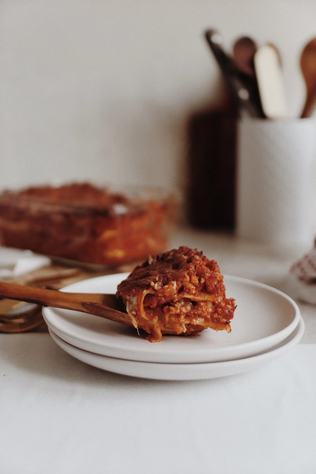

Lasagne

This is the classic lasagne alla Bolognese recipe from the Emilia region in Northern Italy. The Bolognese sauce is made with a mixture of beef and pork mince. The addition of prosciutto, red wine, cinnamon, and nutmeg make it truly authentic.
Ingredients list.
Bolognese Sauce:
2 tablespoons extra-virgin olive oil
1 small onion, chopped
1 carrot, chopped
1 shallot, minced
3 ½ ounces prosciutto, chopped
11 ounces ground pork
11 ounces ground beef
1 teaspoon ground nutmeg
½ teaspoon ground cinnamon
salt to taste
6 fluid ounces red wine
21 ounces peeled San Marzano tomatoes
White Sauce:
6 tablespoons butter
⅔ cup all-purpose flour
3 ¼ cups milk
½ teaspoon ground nutmeg
salt and ground black pepper to taste
Lasagna Layers:
11 ounces lasagna noodles
2 ½ cups grated Parmesan cheese, or to taste
Steps.
Step 1
Heat olive oil in a saucepan over medium heat; cook and stir onion, carrot, shallot, and prosciutto until onion is translucent and prosciutto releases some fat, about 10 minutes. Add pork and beef; season with 1 teaspoon nutmeg, cinnamon, and salt to taste. Cook and stir over medium-high heat until browned and crumbly, about 10 minutes.
Step 2
Pour red wine over meat mixture; increase heat and cook until wine evaporates, about 3 minutes. Add tomatoes and mix well; bring to a boil, cover, reduce heat, and simmer, stirring occasionally, until tomatoes break down and flavors of Bolognese sauce have combined, 1 1/2 to 2 hours.
Step 3
Melt butter in a saucepan over medium-low heat; add flour. Whisk vigorously until mixture is smooth. Pour in milk and cook, stirring occasionally, over medium heat until white sauce thickens enough to cover the back of a spoon, about 10 minutes; season with 1/2 teaspoon nutmeg, salt, and pepper.
Step 4
Bring a large pot of lightly salted water to a boil. Cook lasagna noodles in the boiling water, stirring occasionally until tender yet firm to the bite, about 8 minutes. Drain and run under cold water to stop the cooking process. Lay noodles on a clean towel and pat dry.
Step 5
Preheat oven to 350 degrees F (175 degrees C).
Step 6
Pour a ladleful of Bolognese sauce and a ladleful of white sauce over the bottom of a 9x13-inch baking dish; top with 3 or 4 lasagna noodles. Cover noodles with 1/3 of the white sauce and 1/3 of the Bolognese sauce. Sprinkle some of the Parmesan cheese on top; cover with lasagna noodles. Repeat layers, ending with white sauce and Parmesan cheese.
Step 7
Bake in the preheated oven until bubbling and top is golden brown, 30 to 40 minutes. Let stand 3 to 4 minutes before slicing.